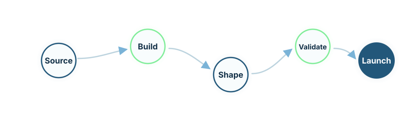

Asset identification
We start with datasets, workflows, infrastructure components, and research programs that already carry venture potential.
Venture formation
A venture studio for genomic AI, regulated AI infrastructure, and biomedical data collaboration.
LydiaRX AG creates venture vehicles from research assets, software architectures, genomic data programmes, secure infrastructure components, and validated industrial use cases.
LydiaRX operates as a venture formation platform. It identifies assets with scientific and commercial potential, matures them through focused technical development, validates them through real use cases, and structures them into spin-offs, licensing vehicles, strategic partnerships, or dedicated operating companies.
A genomic dataset may become a genomic analytics venture. A pharmacogenomic programme may become a personalised medicine vehicle. A secure collaboration layer may become infrastructure for several biomedical initiatives. An agentic workflow runtime may become an enterprise AI product.

We start with datasets, workflows, infrastructure components, and research programs that already carry venture potential.
Promising assets are turned into prototypes, evidence packages, and clearer product definitions.
We decide whether the right path is a spin-off, licensing vehicle, product line, joint venture, or strategic partnership.
Pilots, partner use cases, and market conversations are used to test demand and sharpen the operating model.
Once the asset, governance model, and commercial route are mature enough, it becomes a focused operating vehicle.
Cohort analytics, biomarker discovery, pharmacogenomics, real-world evidence, and disease-area modules.
Agentic R&D workflows, regulated documentation, private AI deployments, and model governance.
Omics Firewall, compute-to-data environments, provenance, auditability, and controlled collaboration.
Dose optimisation, titration modelling, trial-design simulation, and evidence synthesis.
Oncology, cardiometabolic disease, rare disease, infectious disease, and population-specific programmes.
We collaborate with investors, pharma companies, research institutions, hospitals, governments, and technical partners seeking defensible ventures from governed data, AI, and scientific infrastructure.
Discuss Venture Formation